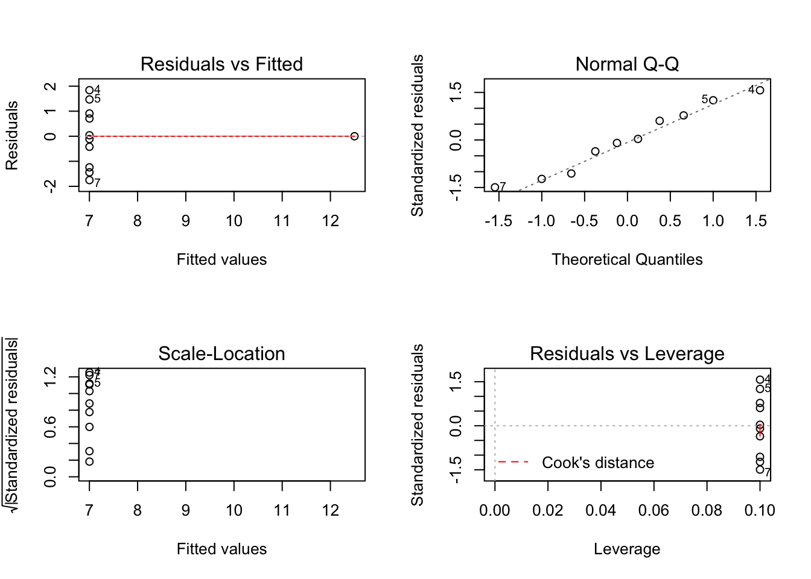

Chapter 11 Postlude: models and data
11.1 Post.1 Evaluating assumptions
Fitting the models:
## x1 x2 x3 x4 y1 y2 y3 y4
## 1 10 10 10 8 8.04 9.14 7.46 6.58
## 2 8 8 8 8 6.95 8.14 6.77 5.76
## 3 13 13 13 8 7.58 8.74 12.74 7.71
## 4 9 9 9 8 8.81 8.77 7.11 8.84
## 5 11 11 11 8 8.33 9.26 7.81 8.47
## 6 14 14 14 8 9.96 8.10 8.84 7.04
## 7 6 6 6 8 7.24 6.13 6.08 5.25
## 8 4 4 4 19 4.26 3.10 5.39 12.50
## 9 12 12 12 8 10.84 9.13 8.15 5.56
## 10 7 7 7 8 4.82 7.26 6.42 7.91
## 11 5 5 5 8 5.68 4.74 5.73 6.89mod1 <- lm(anscombe$y1 ~ anscombe$x1)
mod2 <- lm(anscombe$y2 ~ anscombe$x2)
mod3 <- lm(anscombe$y3 ~ anscombe$x3)
mod4 <- lm(anscombe$y4 ~ anscombe$x4)
summary(mod1)##
## Call:
## lm(formula = anscombe$y1 ~ anscombe$x1)
##
## Residuals:
## Min 1Q Median 3Q Max
## -1.92127 -0.45577 -0.04136 0.70941 1.83882
##
## Coefficients:
## Estimate Std. Error t value Pr(>|t|)
## (Intercept) 3.0001 1.1247 2.667 0.02573 *
## anscombe$x1 0.5001 0.1179 4.241 0.00217 **
## ---
## Signif. codes: 0 '***' 0.001 '**' 0.01 '*' 0.05 '.' 0.1 ' ' 1
##
## Residual standard error: 1.237 on 9 degrees of freedom
## Multiple R-squared: 0.6665, Adjusted R-squared: 0.6295
## F-statistic: 17.99 on 1 and 9 DF, p-value: 0.00217##
## Call:
## lm(formula = anscombe$y2 ~ anscombe$x2)
##
## Residuals:
## Min 1Q Median 3Q Max
## -1.9009 -0.7609 0.1291 0.9491 1.2691
##
## Coefficients:
## Estimate Std. Error t value Pr(>|t|)
## (Intercept) 3.001 1.125 2.667 0.02576 *
## anscombe$x2 0.500 0.118 4.239 0.00218 **
## ---
## Signif. codes: 0 '***' 0.001 '**' 0.01 '*' 0.05 '.' 0.1 ' ' 1
##
## Residual standard error: 1.237 on 9 degrees of freedom
## Multiple R-squared: 0.6662, Adjusted R-squared: 0.6292
## F-statistic: 17.97 on 1 and 9 DF, p-value: 0.002179##
## Call:
## lm(formula = anscombe$y3 ~ anscombe$x3)
##
## Residuals:
## Min 1Q Median 3Q Max
## -1.1586 -0.6146 -0.2303 0.1540 3.2411
##
## Coefficients:
## Estimate Std. Error t value Pr(>|t|)
## (Intercept) 3.0025 1.1245 2.670 0.02562 *
## anscombe$x3 0.4997 0.1179 4.239 0.00218 **
## ---
## Signif. codes: 0 '***' 0.001 '**' 0.01 '*' 0.05 '.' 0.1 ' ' 1
##
## Residual standard error: 1.236 on 9 degrees of freedom
## Multiple R-squared: 0.6663, Adjusted R-squared: 0.6292
## F-statistic: 17.97 on 1 and 9 DF, p-value: 0.002176##
## Call:
## lm(formula = anscombe$y4 ~ anscombe$x4)
##
## Residuals:
## Min 1Q Median 3Q Max
## -1.751 -0.831 0.000 0.809 1.839
##
## Coefficients:
## Estimate Std. Error t value Pr(>|t|)
## (Intercept) 3.0017 1.1239 2.671 0.02559 *
## anscombe$x4 0.4999 0.1178 4.243 0.00216 **
## ---
## Signif. codes: 0 '***' 0.001 '**' 0.01 '*' 0.05 '.' 0.1 ' ' 1
##
## Residual standard error: 1.236 on 9 degrees of freedom
## Multiple R-squared: 0.6667, Adjusted R-squared: 0.6297
## F-statistic: 18 on 1 and 9 DF, p-value: 0.002165Plotting the quartet:
x <- anscombe %>%
select(x1:x4) %>%
gather(key = datx, value = x, x1:x4)
y <- anscombe %>%
select(y1:y4) %>%
gather(key = daty, value = y, y1:y4)
d <- cbind(x, y)
d %>%
ggplot(aes(x = x, y = y)) +
geom_point() +
geom_smooth(method = "lm") +
facet_wrap(~ datx)
11.1.1 Exercise set Postlude-1
- Plotting the assumptions from the
lmmodels:



11.1.2 Exercise set Postlude-2
- Applying
gvlmato thelmmodels:
##
## Call:
## lm(formula = anscombe$y1 ~ anscombe$x1)
##
## Coefficients:
## (Intercept) anscombe$x1
## 3.0001 0.5001
##
##
## ASSESSMENT OF THE LINEAR MODEL ASSUMPTIONS
## USING THE GLOBAL TEST ON 4 DEGREES-OF-FREEDOM:
## Level of Significance = 0.05
##
## Call:
## gvlma(x = mod1)
##
## Value p-value Decision
## Global Stat 1.24763 0.8702 Assumptions acceptable.
## Skewness 0.02736 0.8686 Assumptions acceptable.
## Kurtosis 0.26208 0.6087 Assumptions acceptable.
## Link Function 0.68565 0.4076 Assumptions acceptable.
## Heteroscedasticity 0.27255 0.6016 Assumptions acceptable.##
## Call:
## lm(formula = anscombe$y2 ~ anscombe$x2)
##
## Coefficients:
## (Intercept) anscombe$x2
## 3.001 0.500
##
##
## ASSESSMENT OF THE LINEAR MODEL ASSUMPTIONS
## USING THE GLOBAL TEST ON 4 DEGREES-OF-FREEDOM:
## Level of Significance = 0.05
##
## Call:
## gvlma(x = mod2)
##
## Value p-value Decision
## Global Stat 12.17209 0.0161164 Assumptions NOT satisfied!
## Skewness 0.58916 0.4427453 Assumptions acceptable.
## Kurtosis 0.51843 0.4715134 Assumptions acceptable.
## Link Function 10.99998 0.0009111 Assumptions NOT satisfied!
## Heteroscedasticity 0.06453 0.7994766 Assumptions acceptable.##
## Call:
## lm(formula = anscombe$y3 ~ anscombe$x3)
##
## Coefficients:
## (Intercept) anscombe$x3
## 3.0025 0.4997
##
##
## ASSESSMENT OF THE LINEAR MODEL ASSUMPTIONS
## USING THE GLOBAL TEST ON 4 DEGREES-OF-FREEDOM:
## Level of Significance = 0.05
##
## Call:
## gvlma(x = mod3)
##
## Value p-value Decision
## Global Stat 16.9134 0.002009 Assumptions NOT satisfied!
## Skewness 7.6349 0.005725 Assumptions NOT satisfied!
## Kurtosis 5.8431 0.015638 Assumptions NOT satisfied!
## Link Function 0.6055 0.436470 Assumptions acceptable.
## Heteroscedasticity 2.8297 0.092533 Assumptions acceptable.##
## Call:
## lm(formula = anscombe$y4 ~ anscombe$x4)
##
## Coefficients:
## (Intercept) anscombe$x4
## 3.0017 0.4999
##
##
## ASSESSMENT OF THE LINEAR MODEL ASSUMPTIONS
## USING THE GLOBAL TEST ON 4 DEGREES-OF-FREEDOM:
## Level of Significance = 0.05
##
## Call:
## gvlma(x = mod4)
##
## Value p-value Decision
## Global Stat 5.919e-01 0.9640 Assumptions acceptable.
## Skewness 1.724e-04 0.9895 Assumptions acceptable.
## Kurtosis 5.242e-01 0.4691 Assumptions acceptable.
## Link Function -2.037e-16 1.0000 Assumptions acceptable.
## Heteroscedasticity 6.750e-02 0.7950 Assumptions acceptable.11.2 Post.2 Some extensions of simple linear regression
11.2.1 Multiple regression
11.2.2 Exercise set Postlude-3
- First, a multiple regression of mpg vs transmission (0 = automatic; 1 = manual)
- Next, we extract the residuals after fitting two models:
- transmission ~ horsepower
- mpg ~ horsepower
And then fit a model of the residuals:
resid.am.hp <- lm(am ~ hp, data = mtcars)$residuals
resid.mpg.hp <- lm(mpg ~ hp, data = mtcars)$residuals
m2 <- lm(resid.mpg.hp ~ resid.am.hp)Now compare the coefficient for transmission type:
## Estimate Std. Error t value Pr(>|t|)
## (Intercept) 26.5849137 1.425094292 18.654845 1.073954e-17
## am 5.2770853 1.079540576 4.888270 3.460318e-05
## hp -0.0588878 0.007856745 -7.495191 2.920375e-08## Estimate Std. Error t value Pr(>|t|)
## (Intercept) -3.925231e-17 0.5056342 -7.762986e-17 1.000000e+00
## resid.am.hp 5.277085e+00 1.0613957 4.971836e+00 2.522476e-05Plot the variables:
par(mfrow = c(2,2))
plot(mpg ~ am, data = mtcars)
plot(mpg ~ hp, data = mtcars)
plot(am ~ hp, data = mtcars)
plot(resid.mpg.hp ~ resid.am.hp)
- To get the estimated slope of horsepower using only simple linear regression:
resid.hp.am <- lm(hp ~ am, data = mtcars)$residuals
resid.mpg.am <- lm(mpg ~ am, data = mtcars)$residuals
m3 <- lm(resid.mpg.am ~ resid.hp.am)Now compare the coefficient for transmission type:
## Estimate Std. Error t value Pr(>|t|)
## (Intercept) 26.5849137 1.425094292 18.654845 1.073954e-17
## am 5.2770853 1.079540576 4.888270 3.460318e-05
## hp -0.0588878 0.007856745 -7.495191 2.920375e-08## Estimate Std. Error t value Pr(>|t|)
## (Intercept) -1.985302e-16 0.505634181 -3.926359e-16 1.000000e+00
## resid.hp.am -5.888780e-02 0.007724689 -7.623324e+00 1.676672e-08## [1] 26.57207- Comparing
lmwith other tests
- T-test
##
## Two Sample t-test
##
## data: mtcars$mpg by mtcars$am
## t = -4.1061, df = 30, p-value = 0.000285
## alternative hypothesis: true difference in means is not equal to 0
## 95 percent confidence interval:
## -10.84837 -3.64151
## sample estimates:
## mean in group 0 mean in group 1
## 17.14737 24.39231##
## Call:
## lm(formula = mtcars$mpg ~ mtcars$am)
##
## Residuals:
## Min 1Q Median 3Q Max
## -9.3923 -3.0923 -0.2974 3.2439 9.5077
##
## Coefficients:
## Estimate Std. Error t value Pr(>|t|)
## (Intercept) 17.147 1.125 15.247 1.13e-15 ***
## mtcars$am 7.245 1.764 4.106 0.000285 ***
## ---
## Signif. codes: 0 '***' 0.001 '**' 0.01 '*' 0.05 '.' 0.1 ' ' 1
##
## Residual standard error: 4.902 on 30 degrees of freedom
## Multiple R-squared: 0.3598, Adjusted R-squared: 0.3385
## F-statistic: 16.86 on 1 and 30 DF, p-value: 0.000285- Correlation
##
## Pearson's product-moment correlation
##
## data: anscombe$x1 and anscombe$y1
## t = 4.2415, df = 9, p-value = 0.00217
## alternative hypothesis: true correlation is not equal to 0
## 95 percent confidence interval:
## 0.4243912 0.9506933
## sample estimates:
## cor
## 0.8164205##
## Call:
## lm(formula = anscombe$y1 ~ anscombe$x1)
##
## Residuals:
## Min 1Q Median 3Q Max
## -1.92127 -0.45577 -0.04136 0.70941 1.83882
##
## Coefficients:
## Estimate Std. Error t value Pr(>|t|)
## (Intercept) 3.0001 1.1247 2.667 0.02573 *
## anscombe$x1 0.5001 0.1179 4.241 0.00217 **
## ---
## Signif. codes: 0 '***' 0.001 '**' 0.01 '*' 0.05 '.' 0.1 ' ' 1
##
## Residual standard error: 1.237 on 9 degrees of freedom
## Multiple R-squared: 0.6665, Adjusted R-squared: 0.6295
## F-statistic: 17.99 on 1 and 9 DF, p-value: 0.00217- ANOVA
## Df Sum Sq Mean Sq F value Pr(>F)
## group 2 3.766 1.8832 4.846 0.0159 *
## Residuals 27 10.492 0.3886
## ---
## Signif. codes: 0 '***' 0.001 '**' 0.01 '*' 0.05 '.' 0.1 ' ' 1##
## Call:
## lm(formula = weight ~ group, data = PlantGrowth)
##
## Residuals:
## Min 1Q Median 3Q Max
## -1.0710 -0.4180 -0.0060 0.2627 1.3690
##
## Coefficients:
## Estimate Std. Error t value Pr(>|t|)
## (Intercept) 5.0320 0.1971 25.527 <2e-16 ***
## grouptrt1 -0.3710 0.2788 -1.331 0.1944
## grouptrt2 0.4940 0.2788 1.772 0.0877 .
## ---
## Signif. codes: 0 '***' 0.001 '**' 0.01 '*' 0.05 '.' 0.1 ' ' 1
##
## Residual standard error: 0.6234 on 27 degrees of freedom
## Multiple R-squared: 0.2641, Adjusted R-squared: 0.2096
## F-statistic: 4.846 on 2 and 27 DF, p-value: 0.01591